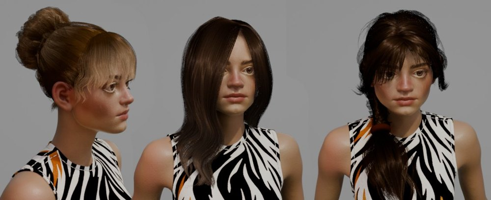

Hair Library¶
Some of the presets from Hair Tool hair library
Hair library contains more than 30 hair presets (male and female hairstyles), plus few of the base components (fringe, braid, tails, eyelashes etc.), that can be loaded into your file and snapped to your character.
Hair presets are mostly nondestructive, meaning that you can edit them to your liking, without having to redo everything from scratch.
New presets can be added with option to group them into categories (folders).
Installation¶
You'll need to download "HairLibrary_xyz.zip" from Gumroad to use it (it is free for Hair Tool users).
- Go to your Gumroad purchases > Hair Tool and get the library zip file.
- Unzip the HairLibrary.zip file somewhere on your drive,
- Go to Blender settings > Addons > Hair Tool > Library (tab),
- Setup the library path with location of the folder where you unzipped the HairLibrary files
License¶
 Some of the presets from Hair Tool hair library
License - CAL-NA-NRB. Basically you can do everything with the assets:
- commercial use of base asset and modifications,
- no requirement to credit the author,
- reselling of modifications,
- modifications are allowed, and can be shared
The only thing you can't do is to resell the assets as they are. Reselling base items is not allowed
Library location¶
User Preferences > Add-ons > Hair Tool > Library tab.
Select target folder where library is located:
 You can add multiple library paths with [+] icon. This way you can keep your presets separate, from the ones that come with Hair Tool
You can add multiple library paths with [+] icon. This way you can keep your presets separate, from the ones that come with Hair Tool
Working with Library¶
 top part is for managing folders, bottom for managing presets (files inside folder)
top part is for managing folders, bottom for managing presets (files inside folder)
In Folders menu [☰] you can Add, Delete, Rename folder (category)
Note - Renaming and Deleting Folders requires selecting target folder with '+' button next to the category name.
In Presets menu [☰] you can Add, Delete, Rename, Open active preset (the one that is currently displayed with thumbnail).
After importing preset, using Append button, you will want to adjust its position and snap it to character. The easiest way to this is by moving preset scalp mesh (it will be drawn with bounding box around it). You can think about this scalp mesh as root of the whole hair preset:
- moving it will move all other objects in the preset
- it comes with Shrinkwrap modifier, so that you can wrap it (and whole hair setup) to character
Appending Preset¶
First part of video shows how to append preset from library. Second half of video covers creation of your own presets and how to store them in library.
Preset Creation¶
To store preset:
- select objects you want to be saved in your preset (you can select multiple objects)
- Open Create Preset sub-panel and click Store in Library.
- Enter preset name in popup window (there will be warning if you try to override existing preset)
- Select rectangular area in 3d View (it will be used for thumbnail generation):
-
- left click and drag in 3D Viewport. You can adjust the corners of captured area if you want.
- Finally, press [Enter] to store preset.